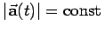
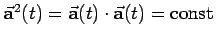
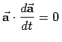
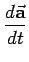

Inhalt Index DeskTop Bronstein

 Vektoranalysis und Feldtheorie Grundbegriffe der Feldtheorie Vektorfunktion einer skalaren Variablen
Vektoranalysis und Feldtheorie Grundbegriffe der Feldtheorie Vektorfunktion einer skalaren Variablen


Ist , d.h. , dann folgt aus (13.3c) , d.h.  und  stehen senkrecht zueinander.
stehen senkrecht zueinander.
Beispiele für diesen Sachverhalt sind: